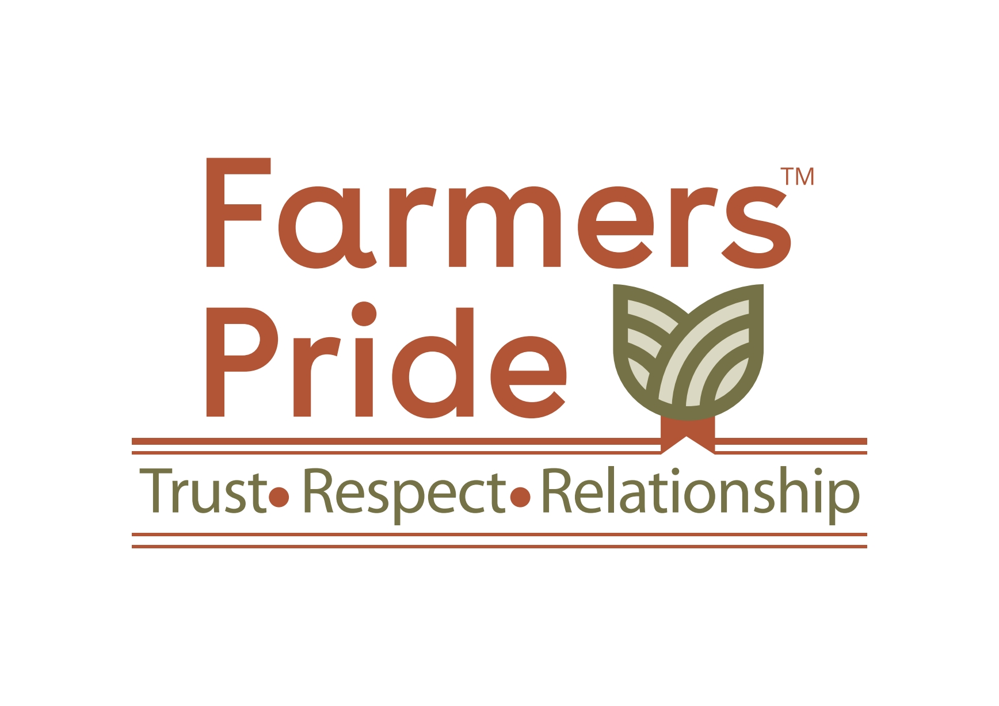

Prakriti Organic Farm
This farm has been planned & conserved in a manner that it hosts various species of plants, birds and animals. Apart from usual paddy and wheat cropping, it also has multiple guava trees, pomegranate trees, a kitchen garden for growing seasonal vegetables, etc. It helps to promote ecological diversity and organic production. Many trainings and meetings related to organic farming have also been conducted on this site. While doing agriculture and dairy farming, team members at Prakriti Organics came across multiple news and reports regarding contamination in oil, ghee, jam, pickles, etc.
Processing & Packaging
Initially food processing was started for friends and family and later it started reaching out to shops as well. This is a seasonal segment because most of the items in production depends on seasonal fruits like mango, gooseberries (amla), jackfruit, etc.
Some of the products which are all season and popular are – salt mix, flax seeds, rasam masala, sambhar masala, ghee, etc. This venture has helped to provide employment to local women and youth on a regular basis. Apart from lab checks, they have informal checks too.
If there is any new product which is to be added is first tried and tested by family and close frends and then it is sent to market.

Retail and shop
The organization started a shop with progressive organic farmers of Bilaspur under the leadership of Collector Bilaspur (2017) Shri Anbalgan P. and Shri Kamal Pattnaik (former DDM, Nabard, 2017 Bilaspur).
The main goal of this group was to spread awareness about organic products and create market so that organic farmers get better prices for their products. Also, they wanted to connect with more farmers to encourage them for biodiversity based organic farming.
Digitalization
Prakriti organics realized the importance of online interaction & connect and invested in technology, website, app, modern software & equipment. Now, it is easier for us to spread our messages and we can also take orders from all parts of India.
Farmers Pride
